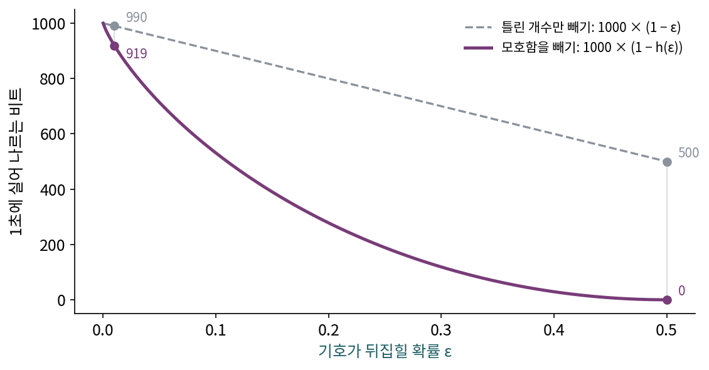
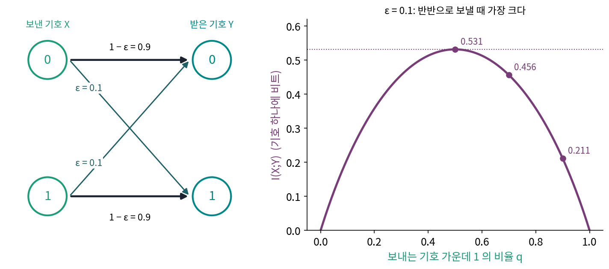
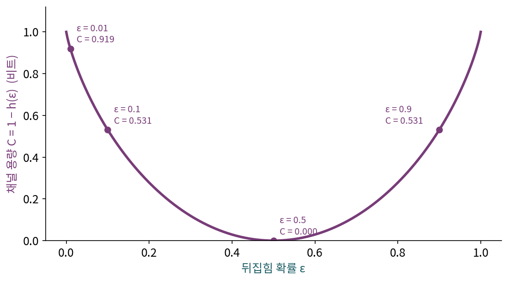
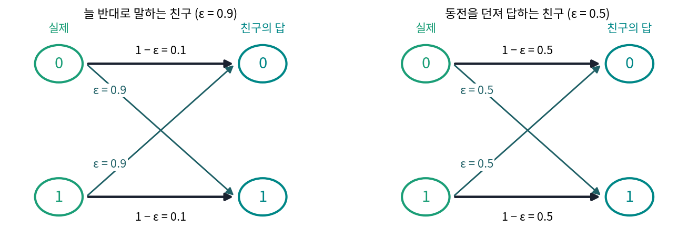
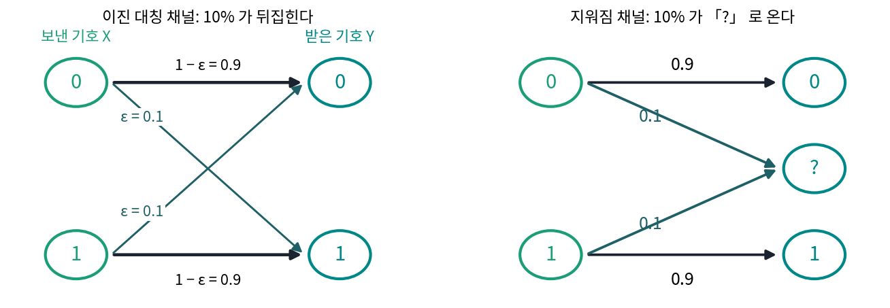
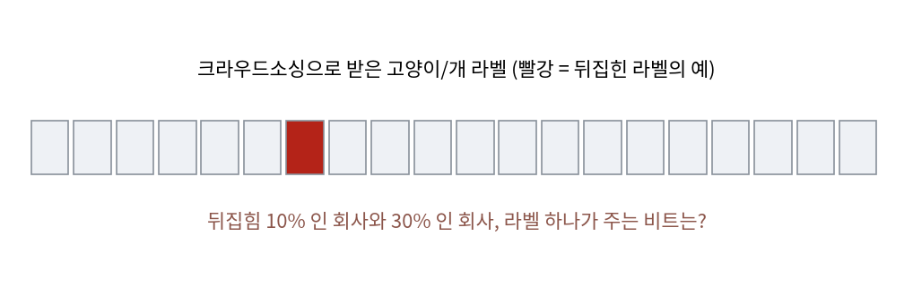

채널 용량: 노이즈 낀 선으로 보낼 수 있는 비트
원천 코딩 정리는 받는 사람에게 비트가 그대로 도착한다고 가정했지만, 실제 전선과 무선, 디스크와 메모리는 드물게 비트를 뒤집는다. 0을 보내면 90%는 0이, 10%는 1이 도착하는 선이 있다고 하자. 이 선으로 1초에 1,000비트를 보내면 정보는 1초에 몇 비트가 건너간 것일까? 10%가 틀렸으니 900비트라고 하고 싶지만, 받는 사람은 어느 비트가 틀렸는지 모른다. 그 모름은 얼마만큼의 비트로 세어야 할까?
역사: 990이 아니라 919
섀넌의 1948년 논문 뒷부분, 노이즈가 있는 통신을 다루는 절의 제목은 「모호함과 채널 용량(Equivocation and Channel Capacity)」이다. 섀넌은 거기서 숫자 하나를 놓고 스스로 그럴듯한 틀린 답을 먼저 적는다. 0과 1을 반반의 확률로 1초에 1,000개씩 보내니 송신기는 1초에 1,000비트의 정보를 만든다. 노이즈 때문에 평균 100개 가운데 1개가 뒤집혀 도착한다면, 이 통신은 1초에 몇 비트를 실어 나를까?
섀넌은 「처음 떠오르는 답」으로 틀린 개수 10을 뺀 990비트를 적고, 곧바로 이 셈이 만족스럽지 않다고 했다. 받는 사람이 오류가 어디서 생겼는지 모른다는 것을 셈에 넣지 않았기 때문이다. 그는 극단으로 가서 틀린 개수만 빼는 셈을 무너뜨렸다. 노이즈가 아주 커서 받은 기호가 보낸 기호와 아무 상관이 없다고 하자. 그래도 받은 기호의 절반은 우연히 맞으므로, 틀린 개수만 빼는 셈은 1초에 500비트를 보냈다고 쳐 준다. 선을 끊고 받는 사람 앞에서 동전을 던져도 같은 점수가 나오는데도 말이다.
섀넌의 고침은 받은 기호를 본 뒤에도 남는 「무엇을 보냈을까」의 불확실성, 조건부 엔트로피 H(X∣Y)를 빼는 것이었다. 그는 이 조건부 엔트로피를 모호함(equivocation)이라 불렀다. 0을 받았을 때 실제로 0을 보냈을 확률은 0.99, 1을 보냈을 확률은 0.01이니 기호 하나의 모호함은 h(0.01) = 0.081비트, 1초에 81비트다. 전송률은 1,000 − 81 = 919비트이고, 받은 기호가 보낸 기호와 상관없는 극단에서는 모호함이 기호마다 1비트라 전송률이 0이 된다.


1,000에서 81을 빼는 거면 지금은 뺄셈 하나인데요. 섀넌이 990을 굳이 먼저 적어 보인 게 신기해요.

그 81은 어디서 나왔죠?

0.99와 0.01로 잰 엔트로피요. 아, 확률로 불확실성을 재는 그 엔트로피를 이 논문이 처음 내놓은 거니까, 그 전에는 틀린 개수 말고는 뺄 게 없었네요.
그래요. 1928년에 하틀리가 정보의 양을 메시지 가짓수의 로그로 재자고 했지만, 거기에는 확률이 없었어요. 가짓수만으로는 「어디가 틀렸는지 모른다」를 비트로 셀 수가 없죠.

그래도 걸려요. 받는 사람은 어느 기호가 틀렸는지 모르는데, 모르는 걸 어떻게 빼요? 하나하나는 모르잖아요.
하나하나는 몰라도, 받은 기호를 보고 남는 불확실성의 평균은 확률만 알면 셀 수 있어요. 0을 받으면 0.99와 0.01이 남고, 그게 늘 같으니까요.

평균으로 빼는 거네요. 그럼 넣는 비트를 반반이 아니게 바꾸면 그 평균도 바뀌고, 919보다 많이 실어 보낼 수도 있는지 궁금해지네요.
이진 대칭 채널
섀넌의 선을 작은 그림으로 적어 보자. 보낸 기호 X와 받은 기호 Y는 0이나 1이고, 0이든 1이든 확률 ε로 뒤집히고 1 − ε로 그대로 도착한다. 이런 선을 이진 대칭 채널 (0과 1이 같은 확률로 뒤집히는 선, binary symmetric channel)이라 한다. 「대칭」은 0이 1로 바뀔 확률과 1이 0으로 바뀔 확률이 같다는 뜻이다.
이 채널로 기호 하나를 보낼 때 건너가는 정보는 상호정보량 I(X;Y)다. 받은 기호의 엔트로피에서, 보낸 기호를 알아도 남는 받은 기호의 불확실성(노이즈가 만든 불확실성)을 빼면 된다. 보낸 기호를 알면 남는 것은 「뒤집혔나」 하나뿐이라 H(Y∣X) = h(ε)이고, 이것은 무엇을 보내든 같다. 그러니 상호정보량을 키우려면 받은 기호의 엔트로피를 키워야 한다.
ε = 0.1일 때 보내는 기호 가운데 1의 비율을 바꿔 보자. 반반으로 보내면 받은 기호도 반반이라 엔트로피가 1비트이고, I = 1 − 0.469 = 0.531비트다. 1을 70%로 보내면 받은 기호의 1이 66%가 되어 엔트로피가 0.925비트로 줄고 I = 0.456비트, 90%면 0.211비트다. 늘 1만 보내면 받은 기호에 담긴 불확실성은 노이즈뿐이라 0비트다.

보내는 사람이 고를 수 있는 것은 입력의 분포뿐이고, 노이즈는 채널이 정한다. 그래서 입력 분포를 바꿔 가며 얻는 상호정보량의 최댓값이 그 채널이 기호 하나에 실어 나를 수 있는 정보의 한계가 된다. 이 최댓값을 채널 용량 (기호 하나로 건너갈 수 있는 정보의 최댓값, channel capacity)이라 한다.
ε = 0.1이면 C = 0.531비트다. 비트 하나를 보낼 때마다 0.469비트는 노이즈가 먹고 0.531비트만 건너간다는 뜻이다. 섀넌의 예 ε = 0.01이면 0.919비트이고, 1초에 1,000기호면 919비트다. ε = 0.5면 받은 기호가 보낸 기호와 상관없으니 용량이 0이다.

용량은 「초당 몇 기호를 보내는가」와 다른 양이다. 같은 선으로 1초에 1,000기호를 보내도 노이즈가 크면 건너가는 정보는 그보다 훨씬 적고, 그 한계가 기호 하나에 C비트다. 이 한계까지 실제로 「틀리지 않게」 보낼 수 있는지는 아직 말하지 않았다. 상호정보량은 평균으로 건너가는 정보의 양일 뿐, 비트 하나하나가 맞게 도착한다는 뜻은 담고 있지 않다.
ML에서: 노이즈 낀 라벨이 주는 비트
사람이 붙인 라벨도 노이즈 낀 채널을 지나온 기호로 볼 수 있다. 참 라벨이 보낸 기호, 사람이 적은 라벨이 받은 기호이고, 검수자가 실수하는 비율이 뒤집힘 확률이다. 이렇게 보면 라벨 하나가 참 라벨에 대해 줄 수 있는 정보는 그 채널의 용량을 넘지 못한다. 노이즈 비율이 조금 늘 때 라벨 하나의 값이 얼마나 줄어드는지는 문제 6에서 계산한다. 라벨 노이즈를 이렇게 노이즈 채널로 놓고 학습 방법을 짜는 연구는 노이즈 전이 행렬(참 라벨이 적힌 라벨로 바뀔 확률표)을 추정하는 방식으로 널리 다뤄졌다.
문제 4. 늘 반대로 말하는 친구
친구 둘에게 「내일 비 와?」를 묻는다. 친구 A는 일기예보를 보고 90%의 날에 반대로 답한다(장난꾸러기다). 친구 B는 동전을 던져 답한다. 두 친구를 이진 대칭 채널로 보고 (가) 뒤집힘 확률 ε와 (나) 채널 용량을 구하라. (다) 어느 친구에게 묻는 것이 쓸모 있는가?


A는 ε = 0.9, B는 ε = 0.5요. B는 1 − h(0.5) = 0이니까 아무것도 안 알려 줘요. A는 열에 아홉을 틀리니까… 0.1만 맞으니 B보다 훨씬 나쁘겠죠. 쓸모없는 정도가 아니라 해로워요.
용량 식에 0.9를 넣어 볼까요?
1 − h(0.9)인데, h(0.9) = h(0.1) = 0.469라서 0.531이요. 어, ε = 0.1인 채널과 같아요. 열에 아홉을 틀리는 친구가 열에 아홉을 맞히는 친구만큼 알려 준다고요?
A가 「비 온대」라고 하면 우산을 안 챙기면 되잖아. 거꾸로 읽으면 열에 아홉을 맞히는 거야.
아, 틀린 답이라도 늘 같은 방향으로 틀리면 뒤집어 읽을 수 있구나. 맞힌 비율로 친구를 쟀는데, 정보는 답과 날씨가 얼마나 묶여 있는지를 재는 거였어요.
그래요. 그래서 B만 쓸모가 없어요. 받은 답이 보낸 것과 상관없는 ε = 0.5가 용량 0이고, 거기서 어느 방향으로 멀어지든 용량이 커져요.

반대로만 가는 내비 같네요. 「좌회전」이 나오면 우회전하면 되니까 아무 말도 안 하는 내비보다는 낫죠.
문제 5. 틀리는 대신 모른다고 하는 채널
채널 둘을 비교한다. 이진 대칭 채널은 비트의 10%를 뒤집는다. 지워짐 채널(binary erasure channel)은 비트의 10%를 「?」로 바꿔 보내고, 나머지는 그대로 보낸다. (가) 넣는 비트가 반반일 때 지워짐 채널의 I(X;Y)를 구하라(이 채널도 반반일 때 가장 크다). (나) 두 채널의 용량을 비교하고, 차이가 어디서 오는지 말하라. (다) 이진 대칭 채널의 뒤집힘이 몇 %면 지워짐 10% 채널과 용량이 같아지는가?

둘 다 10%가 망가지니까 용량도 비슷하겠죠. 이진 대칭이 0.531이니까 지워짐도 그쯤이요.
(가)를 H(X) − H(X∣Y)로 계산해 볼까요? 「?」가 아닌 것을 받았을 때 X에 대해 남는 불확실성은요?

0이요. 「?」가 아니면 그대로 온 거니까요. 「?」를 받으면 반반이라 1비트고요. 그럼 H(X∣Y) = 0.1 × 1 = 0.1이고 I = 1 − 0.1 = 0.9예요. 0.531보다 훨씬 크네요. 둘 다 10%라서 비슷할 거라고 한 게 틀렸어요.
이진 대칭은 망가진 비트도 멀쩡한 척 오니까, 받은 비트 전부를 조금씩 의심해야 해. 지워짐은 망가진 자리를 알려 주니까 나머지 90%는 믿어도 되고.
섀넌이 990을 버린 이유가 「받는 사람이 오류가 어디서 생겼는지 모른다」였죠. 그 「어디」를 알려 주면 무엇이 달라지는지가 이 차이예요. (다)는요?
1 − h(ε) = 0.9가 되는 ε를 찾으면 돼요. h(ε) = 0.1이어야 하니까 ε가 아주 작아야 하는데… 스크립트로 풀면 0.013, 1.3%예요. 오류 자리를 아는 10%가 모르는 1.3%만큼밖에 손해가 아니네요.
실제 시스템에서도 「오류 자리를 아는가」의 차이를 써요. 디스크 하나가 통째로 꺼지면 어느 조각이 없어졌는지 알기 때문에 지워짐 채널처럼 다룰 수 있고, 그래서 적은 덧붙임으로도 되살릴 수 있어요. 그 계산은 오류 정정 코드를 본 뒤에 다시 해 봐요.
문제 6. 라벨 회사 둘
고양이/개 사진의 라벨을 두 회사에 맡겼다. A사의 라벨은 10%가, B사의 라벨은 30%가 뒤집혀 있다(어느 사진이 뒤집혔는지는 모른다). B사가 라벨 값을 3분의 1만 받는다면 어느 회사에 맡기는 것이 나은가? 라벨 하나가 참 라벨에 대해 주는 정보의 최댓값으로 비교하라.

틀린 비율로 보면 A가 90% 맞고 B가 70% 맞으니까, 맞은 라벨 기준으로는 B가 A의 78%예요. 그런데 값은 3분의 1이니까 B가 훨씬 싸네요.
라벨 하나가 주는 정보로 다시 재 볼까요?
채널 용량으로요? A는 1 − h(0.1) = 0.531비트, B는 1 − h(0.3) = 0.119비트예요. B의 라벨 하나는 A의 22%밖에 안 돼요. 0.531 ÷ 0.119 = 4.47이니까 같은 정보를 얻으려면 B 라벨이 A의 네 배 반은 있어야 해요.

맞힌 비율로는 78%인데 정보로는 22%야? 차이가 너무 커서 이상한데.
뒤집힘 50%면 맞힌 비율은 얼마고 정보는 얼마죠?
음, 맞힌 비율 50%, 정보 0이요. 아, 맞힌 비율은 50%가 「아무것도 모름」이니까 0점 기준이 거기 있었네요. 70%는 50%에서 20%포인트 올라간 거고, 90%는 40%포인트. 게다가 용량 곡선이 0.5 근처에서 아주 평평해서 70%는 거의 0에 가까운 거고요.
그럼 값이 3분의 1이어도 정보 1비트당으로는 B가 4.47 ÷ 3 = 1.5배 비싸요. A에 맡기는 게 낫네요.
실제로는 같은 사진에 B사 라벨을 여러 개 받아 다수결을 하면 정보를 모을 수 있어요. 얼마나 모이는지는 같은 비트를 여러 번 보내는 반복 코드로 셀 수 있어요.